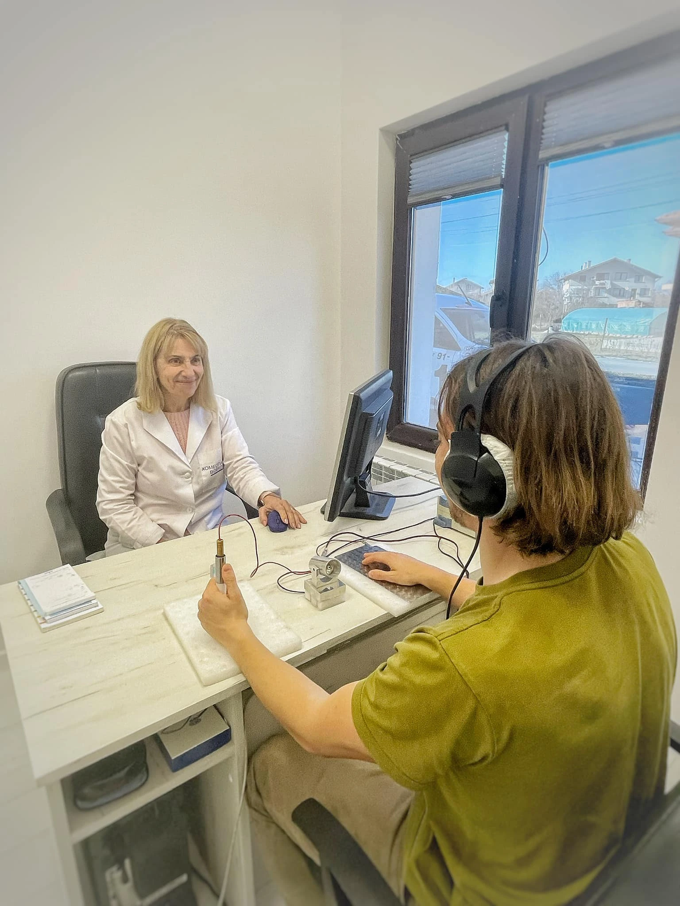
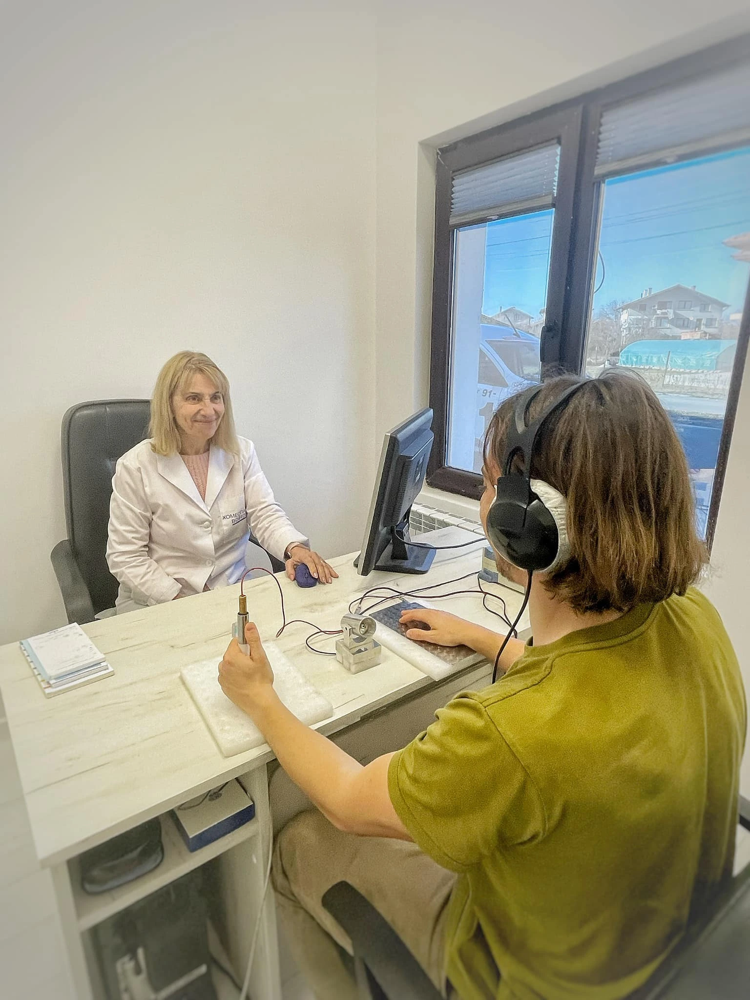

Холистичен здравен център „Алфа“
Център за холистично здраве в Костинброд, ръководен от д-р Пламенка Томова и нейния екип. Предлагаме хомеопатия, биорезонанс, компютърна диагностика, масажи и индивидуални терапии.

Център за холистично здраве в Костинброд, ръководен от д-р Пламенка Томова и нейния екип. Предлагаме хомеопатия, биорезонанс, компютърна диагностика, масажи и индивидуални терапии.
В „Алфа“ предлагаме комбинация от холистични и допълващи методи, насочени към баланс, комфорт и подкрепа на здравето.
Диагностика с апарати Life Stream и Sensitiv 500 Imago, даваща цялостен поглед върху състоянието на организма.
Процедури, насочени към хармонизиране и подпомагане на естествените процеси в организма чрез честотен баланс.
Индивидуално подбрани хомеопатични средства, съобразени с цялостния профил на човека.
Масажи за отпускане, освобождаване на напрежение и подобряване на подвижността.
Мануален метод за възстановяване на стойката, подвижността и енергийния баланс.
Насоки за избор на добавки според индивидуалните нужди – енергия, имунитет, възстановяване.
Екип от специалисти, обединени от идеята за внимателен и цялостен подход към човека.
Вътрешни болести · Белодробни болести · Хомеопатия
Хомеопатия · Биорезонанс · Електронна гем терапия
Класически и лечебни масажи · Юмейхо
Консултант хранителни добавки
Част от мненията, споделени онлайн за здравен център „Алфа“. Обща оценка в Google: 5.0 от 6 ревюта.
„Вече със семейството сме ваши не само пациенти, а и почитатели. Благодаря за доброто отношение и резултатното лечение!“
„Страхотно отношение и професионализъм. Препоръчвам!“
„Много съм доволен от услугите и вниманието към пациента.“
„Посещавам др.Томова от години и и се доверявам със затворени очи. Невероятен специалист е... ме спаси от заболяване от което неможеха да ми помогнат диста ревматолози... съм супер здрава.“
Работим с предварително записани часове. Графикът по дни се обявява редовно във Facebook страницата.
Адрес:
ул. „Славянска“ 159–161
Костинброд, България
Телефон:
089 790 8801
Имейл:
healthcentrealfa@gmail.com
Facebook:
facebook.com/healthcentrealfa
Поглед към атмосферата, кабинетите и екипа на „Алфа“.
 



Отговори на често задавани въпроси за нашите услуги и център.